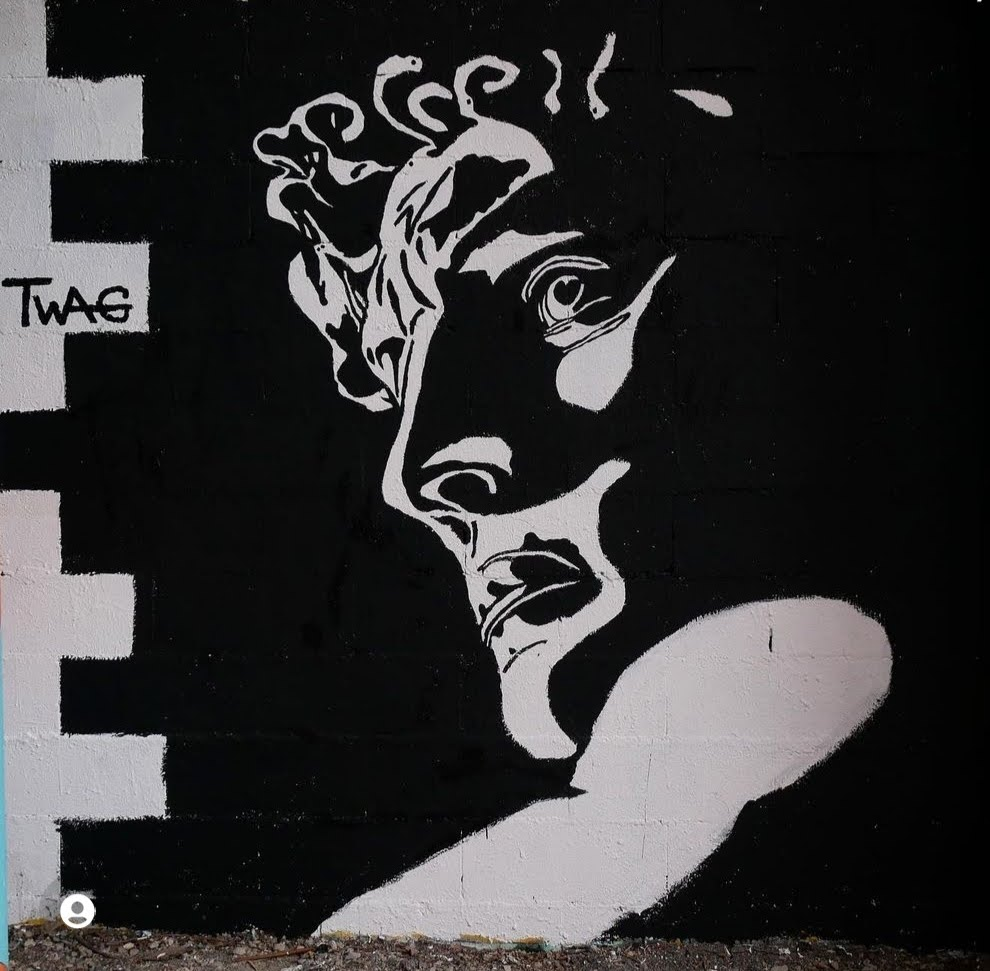
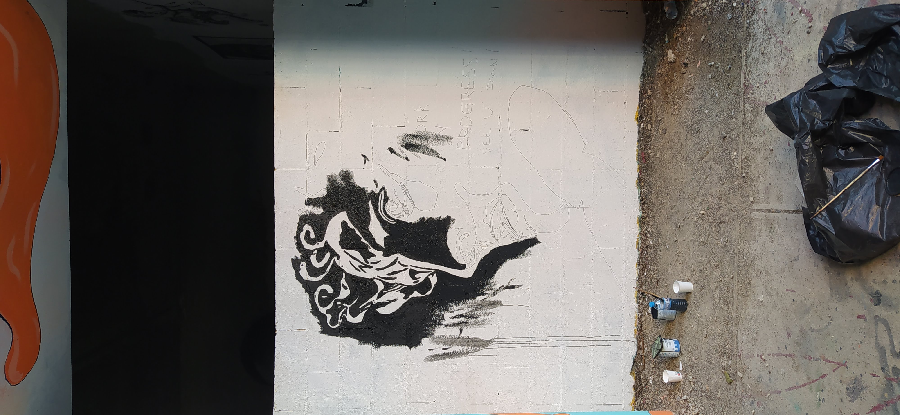
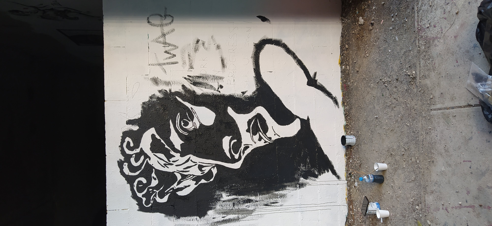
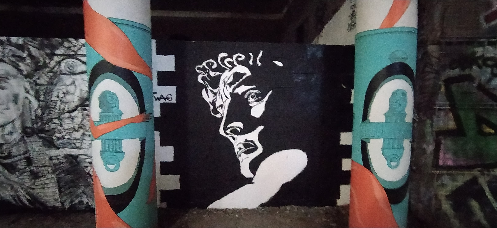

De l'atelier à la rue
Transposition monumentale — Spot 13, Paris 13e





Lors de sa réalisation sur le mur en parpaings du Spot 13 à Paris, l'œuvre a été peinte à grande échelle. Le fond noir enveloppe le portrait et s'articule sur le côté gauche avec un motif géométrique crénelé vertical en noir et blanc, accompagné de la signature manuscrite « TWAG ». La texture brute du mur et les briques apparentes apportent une dimension street art authentique et monumentale à la composition classique.